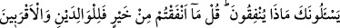

gerekmektedir. Öyle bir devirdeyiz ki, insanların dillerinden ve ezâlarından sâlim
kalmak mümkün olamamaktadır. Hem biz biliyoruz ki, en çok sıkıntı ve belâya maruz
kalanlar peygamberlerdir. Sonra velîler ve sonra da bunların hâline yakın olanlar.
Nitekim Sâib der ki:
Değirmende elbette toz bulunur ey Sâib,
Kâinât olaylarından emniyyet mümkün mü?
“İnsanlar tek bir ümmetti” âyet-i kerîmesi hakkında “et-Te’vîlâtü’n-Necmiyye”de
denilmiştir ki: İnsanların birçoğunda mevcûd olan kötü hasletler, sonradan ortaya
çıkmıştır. Zira bezm-i elestte bir tek ümmet idiler. Hepsi de fıtrat-ı İslâm üzere dünyaya
geldiler. Hadis-i şerifte buyurulmuştur ki: “Her doğan İslâm fıtratı üzere dünyaya
gelir. Daha sonra ebeveyni onu yahûdî, nasrânî ya da mecûsî yaparlar.”[142]
Efendimiz (s.a.)’in “ya da müslüman yaparlar” buyurmaması iki sebebtendir:
Birincisi; küfür taklîd ile oluşur. Halbuki îmân fıtrîdir; taklîd ile gerçekleşmez. İkincisi
ise buradaki ebeveynden murad insanın mayasındaki aslî iki unsur olan yıldızlarla
anâsır-ı erbeadır ki onlar da toprak, su, hava ve ateştir. Her iki takdîre göre de mânâ
şudur ki: Çocuk, ana-babanın kötü terbiyesi sonucu hak yoldan sapar. Tevhid ve mârifet
yolu olan sırat-ı müstakîmden uzaklaşır. Peygamber de olsa, mutlaka hak yola erdirici
bir hâdiye ihtiyaç vardır. Nitekim Peygamberimiz (s.a.) hakkında Yüce Allah
buyurmuştur ki: “Seni şaşırmış bulup da yol göstermedi mi?” (ed-Duhâ, 93/7)
Her kimsenin saîd ya da şakî olduğu yazılmıştır. Rasûl-i Ekrem -sallallahu aleyhi ve
sellem- Efendimiz buyurmuşlardır ki: “Hiç bir kimse yoktur ki, onun kitabına ehl-i
cennetten, ya da cehennemden olduğu yazılmış olmasın. Kişinin saîd, ya da şakî
olduğu yazılmıştır.” Bunun üzerine sahâbe-i kirâm (r.a.): “O halde ey Allah’ın Rasûlü!
Mâdem ki her şey yazılı, amel etmeyi bırakıp işi kadere havâle etsek olmaz mı?” diye
sorunca Efendimiz (s.a.): “Amel işleyiniz. Zira herkes ne için yaratılmışsa o, ona
kolaylaştırılır. Şakâvet ehline şakîlerin amelleri kolaylaştırılırken, saâdet ehline de
saîdlerin ameli kolaylaştırılır.”[143] buyurmuşlardır.
Sülûk yolunda terk-i dünyâ, fakirlik, tecrîd gibi sıkıntılara göğüs germek gerektir ki,
cemâl cennetine ve karar yurduna girmek mümkün olsun. Büyükler hicâb müddetinin
uzamasından ve visâl yolunda çokça çalışıp çabalamaktan, mücâhededen bıkıp
sıkılmazlar. Müşâhede-i cemâl ve zevk-i visâl için sabırları kalmayınca nusret-i ilâhîyi
taleb ederler. Nefislerinin kötü alışkanlıklarını ortadan kaldırması için tecellî-i
Rahmân’ı isterler. Bununla beraber Mevlâ’nın emir ve yasaklarına sabırla riâyet edip,
murad-ı ilâhî’ye boyun eğerler. Bütün bunların sonunda nusret-i ilâhî gelir de hicâb
kalkar ve envâr-ı cemâl zuhûr eder.